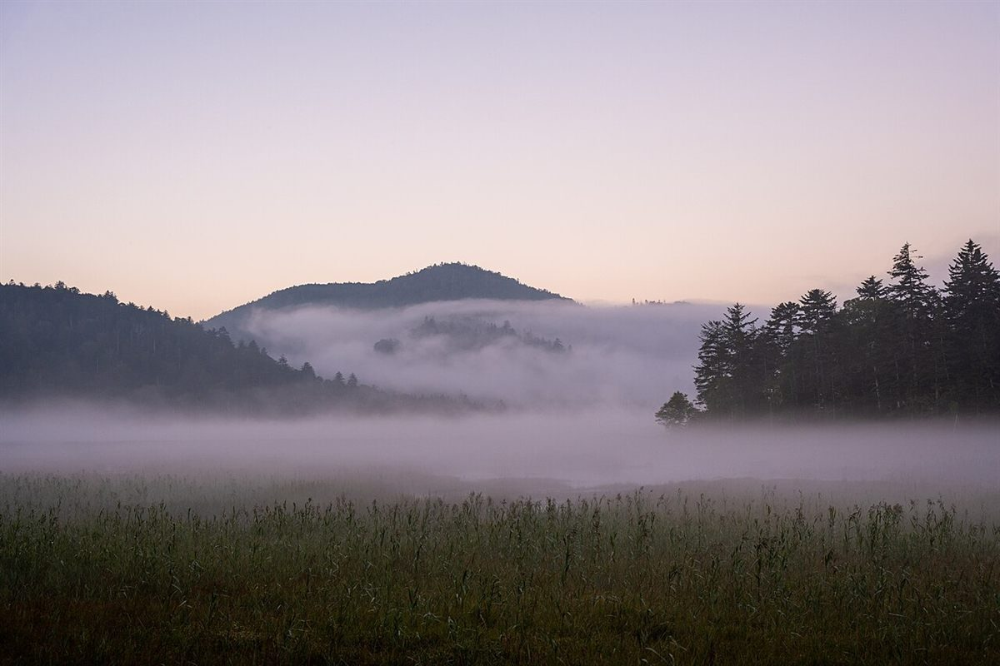
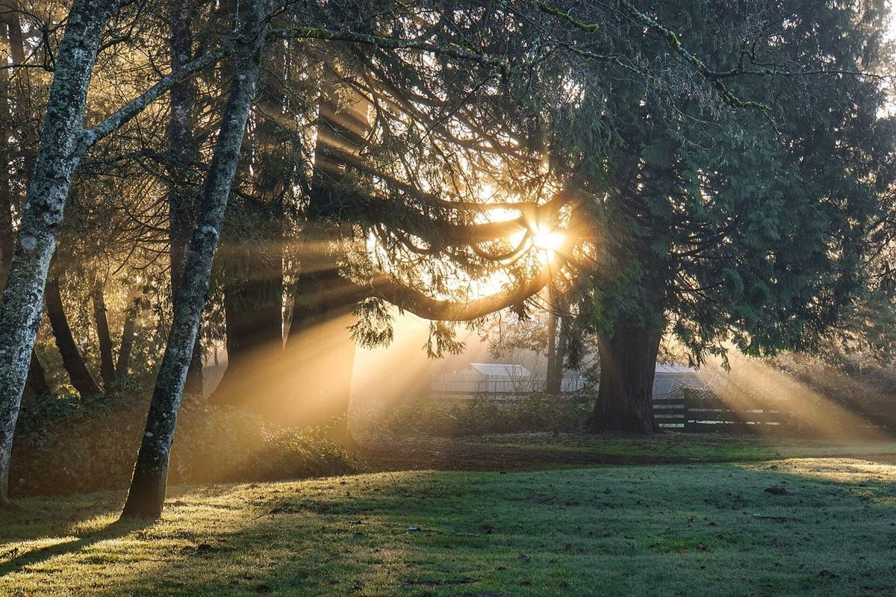
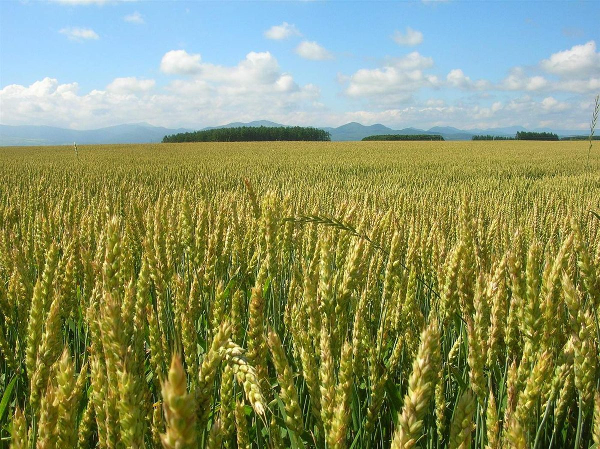
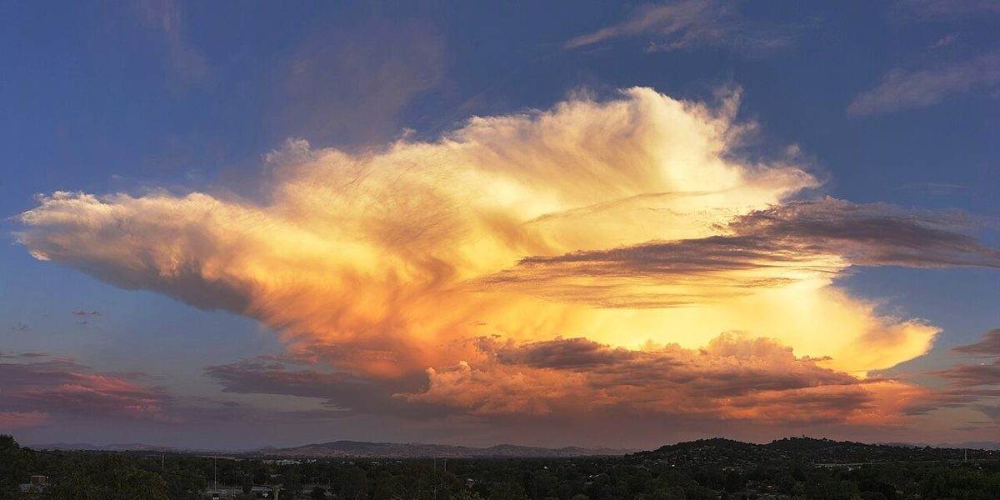

制作側の案 ひかりの一日
朝から夕方まで、
ひかりの色が変わっていく。
municafe の無料試作ページです。一日のなかで変わる光の色を、ページの縦の流れに置いてみました。上から下へ読み進めると、朝から夕方、そして夜へ。
この切り口は制作側の案であり、お店の考え方やコンセプトを示すものではありません。

朝
うすい桃色の、はじまりの光
やわらかな光で、一日が始まります。ここでは朝のイメージを、淡い色と静かな余白で表してみました。

昼
空の青と雲の白
空が高く、色がいちばんはっきりする時間帯。見やすく、あかるいページを心がけています。

昼から夕
麦の黄金色
光が少しずつ傾いて、野原の色が深くなっていきます。

夕
ながい影と、橙の空
一日の終わりが近づく、あたたかい色の時間です。

夕
空いっぱいの雲
雲の縁が金色にかがやく夕方の空のイメージです。

夜
しずかに暮れていく
日が落ちたあとの、深い藍色。このページの基調色にしています。

お店の情報
- 所在地
- 福井県丹生郡越前町蝉口3-19
- 電話
- 0778-67-0766
- 営業時間
- 準備中(お問い合わせください)
- 定休日
- 準備中(お問い合わせください)